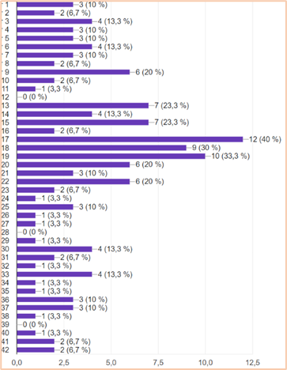

ТОП 4 ОНЛАЙН ФОТО ГЕНЕРАТОРІВ ШТУЧНОГО ІНТЕЛЕКТУ | ВИКОРИСТАННЯ ФОТО ГЕНЕРАТОРІВ ШІ ДЛЯ СТВОРЕННЯ ФОНОВИХ ЗОБРАЖЕНЬ САЙТУ
Прим. Перевірка тільки безкоштовних функційФонове зображення сайту (англійською "background image", "bg img") – це зображення, яке використовується на веб-сторінках, у веб-додатках як фоновий елемент, на якому розміщуються об’єкти, текст. Фонові зображення можуть бути статичними (постійними) або анімованими (гіфками, відеофонами). Вибираються фонові зображення так, щоб вони не перебивали, не ускладнювали читання чи сприйняття основного контенту на сайті.
За допомогою фонових зображень створюється затишна атмосфера сайту, додається естетика або підкреслюється тематика сторінок, контент стає більш читабельним та привабливим для відвідувачів.
Генератори зображень штучного інтелекту – це програмні рішення для перетворення тексту на реалістичні або абстрактні зображення, що використовують методи та алгоритми машинного навчання (навчаються на величезному наборі даних, включаючи різні зображення з Інтернету та їх відповідні описи).
За допомогою онлайн фото генераторів ШІ з тексту роблять за декілька секунд готове зображення. Звичайно вони не всі працюють досконало, але якщо описувати більш детально і генерувати багато разів, то результатом буде зображення більш подібне до бажаного опису. Їх можна використовувати для створення фонових зображень сайтів, пришвидшуючи час проектування, не витрачаючи багато часу на пошуки зображень в Інтернеті та їх створення в редакторах.
Тому у доповіді розглядається перевірка ефективності наявних фото генераторів штучного інтелекту в онлайн мережі. Всього було перевірено безкоштовними генераціями 32 онлайн фото генератора ШІ.
Для досліджень було використано такі текстові рядки:
* blue clouds with pink shadow in sunset. a big circle shaped clock in the middle of these clouds exactly shrouded in these clouds. a purple dolphin is around the clock
* there is a clock and a dolphin in the middle of blue-pink clouds at sunset. hd. full detailed
* table, wig, mirror with lights, hair accessories
* cooking, a lot of products on the table, several ready-made desserts
* knitting and crochet, a pink cat playing with a ball of thread in the room, a low table, a rug, a clock on the wall, glowing light. 8k hd. realistic. fantasy. full detailed
* all for makeup, eye shadows and blush and mascara and lipsticks on the table, shimmering background wall. painting. fantasy. geometric. hd. full detailed
Для оцінки генерації було використано кількісні та якісні методи оцінювання ефективності генерації зображення: переваги та недоліки кожного фото генератора ШІ, кількість і якість генерацій кожного було зібрано до таблиці критеріїв оцінювання та вираховано відсотки переваг та кількості якісної генерації картинок, загальний відсоток.
1⋮ https://gencraft.com/generate
Є платний і безкоштовний плани. В безкоштовному дається ліміт генерації картинок в день, що дорівнює 10 шт.
Проста сторінка для генерації на основі введених слів:
Створені картинки зберігаються на сайті на 30 днів в безкоштовному плані до автоматичного їх видалення. Для платних планів час не обмежено.
Переваги: вхід за допомогою e-mail, простий зрозумілий дизайн сайту, перегляд недавно створених, наявна кнопка скачування зображення, нема реклами, достатня кількість художніх стилів відтворення зображення.
Недоліки: водяний знак, який потрібно видаляти за допомогою іншого сайту, немає редагування фото, мала кількість розширених налаштувань інструментів генерації та моделей ШІ, ліміт по кількості генерацій, дуже швидко закінчуються безкоштовні кредити генерацій.
2⋮ https://creator.nightcafe.studio/
Видаються 5 щоденних кредитів для генерації картинок.
Сторінка для генерації:
Переваги: вхід за допомогою e-mail, перегляд недавно створених, наявна кнопка скачування зображення, без водяного знаку, має розширені налаштування генерації, достатня кількість вибору моделей ШІ та художніх стилів відтворення зображення.
Недоліки: сайт може виходити з аккаунту самостійно, редагування фото немає, наявна реклама, ліміт по кількості генерацій, дуже швидко закінчуються безкоштовні кредити генерацій.
Видається 100 кредитів генерації зображення.
Сторінка для генерації:
Переваги: вхід за допомогою e-mail, простий зрозумілий дизайн сайту, без водяного знаку, нема реклами, наявна кнопка скачування зображення, достатня кількість вибору моделей ШІ та розширених налаштувань генерації, перегляд недавно створених, редагування фото.
Недоліки: ліміт генерації, немає художніх стилів відтворення зображення.
Сторінка для генерації:
Переваги: вхід за допомогою e-mail, простий зрозумілий дизайн сайту, наявна кнопка скачування зображення, без водяного знаку, нема реклами, кількість художніх стилів відтворення зображення достатня.
Недоліки: сайт виходить самостійно з аккаунта при вході за допомогою e-mail, нема перегляду недавно створених, генерує по одній картинці, нема редагування фото, нема розширених налаштувань інструментів генерації, нема моделей ШІ, довго генерує зображення.
Видається 5 безкоштовних кредитів кожен день для генерації зображення.
Сторінка для генерації:
Переваги: вхід за допомогою e-mail, простий зрозумілий дизайн сайту, перегляд недавно створених, нема реклами, без водяного знаку, наявна кнопка скачування зображення.
Недоліки: відсутнє редагування фото, невелика кількість художніх стилів відтворення зображення, ліміт по кількості генерацій, дуже швидко закінчуються безкоштовні кредити генерацій, немає розширених налаштувань інструментів генерації, немає моделей ШІ, довго генерує.
6⋮ https://www.cutout.pro/ai-art-generation
Видається 5 безкоштовних кредитів генерації зображення.
Сторінка для генерації:
Переваги: вхід за допомогою e-mail, простий зрозумілий дизайн сайту, безлімітова генерація зображення, наявна кнопка скачування зображення, нема реклами, без водяного знаку.
Недоліки: невелика кількість художніх стилів відтворення зображення, немає моделей ШІ, нема розширених налаштувань інструментів генерації, відсутнє редагування фото та перегляд недавно створених, немає кнопки перегляду зображення, довго генерує, швидко закінчуються безкоштовні кредити, безкоштовні кредити призначені для скачування зображення.
Сторінка для генерації:
Переваги: багато художніх стилів відтворення зображення, показує недавно створені картинки по колекціях змінених налаштувань генерації, вхід за допомогою e-mail, немає ліміту на генерацію, наявна кнопка скачування зображення, простий зрозумілий дизайн сайту, нема реклами.
Недоліки: водяний знак з’являється на зображенні після скачування, немає редагування фото, невелика кількість моделей ШІ, невелика кількість розширених налаштувань генерації, генерує по одній картинці, на довго створені фото не зберігаються на сайті.
Безкоштовний план:
Сторінка для генерації:
Переваги: вхід за допомогою e-mail, в наявності також є відео генератор, достатня кількість генерацій на безкоштовному плані, наявна кнопка скачування зображення, нема реклами, перегляд недавно створених, без водяного знаку, має достатню кількість розширених налаштувань інструментів генерації.
Недоліки: відсутнє редагування фото, художні стилі відтворення зображення без пояснювальних картинок, немає вибору моделей ШІ, ліміт по кількості генерацій.
Підписки немає.
Сторінка для генерації:
Переваги: автоматичне створення профілю, простий зрозумілий дизайн сайту, безкоштовне створення зображень, без водяного знаку, має розширені налаштування інструментів генерації, нема реклами, багато художніх стилів відтворення зображення.
Недоліки: автоматична публікація на загальний огляд(потрібно видаляти створене), немає кнопки скачування зображення, потрібно заново текст писати в поле вводу, довго генерується зображення, має ліміт використання за 24 години (потрібно чекати кілька годин до наступної спроби), відсутнє редагування фото, немає вибору моделей ШІ, відсутній перегляд недавно створених.
10⋮ https://getimg.ai/text-to-image
Видається 100 кредитів генерації на кожен місяць.
Безкоштовний план:
Сторінка для генерації:
Переваги: вхід за допомогою e-mail, перегляд недавно створених, простий зрозумілий дизайн сайту, наявна кнопка скачування зображення, можна покращити фото, наявний великий вибір моделей ШІ, редагування фото, має достатню кількість розширених налаштувань інструментів генерації, нема реклами, без водяного знаку.
Недоліки: ліміт по кількості генерацій, відсутній вибір художніх стилів відтворення зображення.
Було добре підібрано ШІ моделі для генерації, що в основному з першого разу можна отримати те, що потрібно.
Видається 15 кредитів генерації на 20 днів. Підписка відсутня, купуються кредити.
Сторінка для генерації:
Переваги: вхід за допомогою e-mail, перегляд недавно створених, простий зрозумілий дизайн сайту, наявна кнопка скачування зображення, редагування фото, нема реклами.
Недоліки: ліміт по кількості генерацій, водяний знак, відсутність застосування художніх стилів та моделей ШІ, немає розширених налаштувань інструментів генерації, не можна вибрати розмір зображення, безкоштовні кредити генерації швидко закінчуються.
12⋮ https://stablecog.com/generate?smo=true
Видається 100 кредитів генерації зображення.
Сторінка для генерації:
Переваги: вхід за допомогою e-mail, простий зрозумілий дизайн сайту, перегляд недавно створених, наявна кнопка скачування зображення, без водяного знаку, нема реклами, наявний вибір моделей ШІ, має розширені налаштування інструментів генерації в достатній кількості.
Недоліки: швидко закінчуються безкоштовні кредити генерації, ліміт по кількості генерацій, відсутній вибір художніх стилів відтворення зображення, немає редагування фото, невелика кількість моделей ШІ.
13⋮ https://deepai.org/machine-learning-model/text2img
Сторінка для генерації:
Переваги: вхід за допомогою e-mail, без водяного знаку, наявна кнопка скачування зображення.
Недоліки: реклама на сайті, немає розширених налаштувань генерації, генерує по одній картинці, немає перегляду недавно створених зображень, відсутнє редагування фото, невелика кількість художніх стилів відтворення зображення, ліміт по кількості генерацій без зазначення цифри в профілі, немає моделей ШІ.
14⋮ https://www.creativefabrica.com/spark/tools/art-generator/
Сторінка для генерації:
Переваги: вхід за допомогою e-mail, перегляд недавно створених, без водяного знаку, нема реклами, декілька художніх стилів можна застосовувати водночас.
Недоліки: дуже мала кількість художніх стилів відтворення зображення, немає розширених налаштувань інструментів генерації, немає моделей ШІ, кнопка скачування зображення відсутня, редагування фото відсутнє.
15⋮ https://www.fotor.com/images/create
Видається 5 кредитів генерації при вході в аккаунт.
Сторінка для генерації: 
Переваги: вхід за допомогою e-mail, простий зрозумілий дизайн сайту, перегляд недавно створених, наявна кнопка скачування зображення, без водяного знаку, нема реклами.
Недоліки: дуже швидко закінчуються безкоштовні кредити генерації, немає редагування фото, немає розширених налаштувань інструментів генерації, відсутні моделі ШІ, невелика кількість художніх стилів відтворення зображення, ліміт по кількості генерацій.
16⋮ https://www.iamfy.co/studio/landing/ai-painting
Видається 10 генерацій на тиждень.
Сторінка для генерації:
Переваги: простий зрозумілий дизайн сайту, перегляд недавно створених, можна застосовувати декілька художніх стилів до зображення, достатня кількість художніх стилів відтворення зображення, без водяного знаку, нема реклами.
Недоліки: не має входу за допомогою e-mail, потрібно створювати, скачування картинок тільки при підписці, відсутнє редагування фото, немає розширених налаштувань інструментів генерації, немає моделей ШІ, ліміт по кількості генерацій, дуже швидко закінчуються безкоштовні кредити генерацій.
Сторінка для генерації:
Переваги: вхід за допомогою e-mail, простий зрозумілий дизайн сайту, є кнопка скачування зображення, немає ліміту по кількості генерацій.
Недоліки: реклама на сайті, вибір для застосування художніх стилів до зображення дуже малий, порівняно довго генерує зображення, немає розширених налаштувань інструментів генерації, присутній водяний знак, немає перегляду недавно створених зображень, немає моделей ШІ, немає редагування фото.
18⋮ https://www.bing.com/images/create
Підписка відсутня.
Сторінка для генерації:
Переваги: простий зрозумілий дизайн сайту, вхід за допомогою e-mail, є кнопка скачування зображення, перегляд недавно створених зображень, немає ліміту кількості створення, наявне прискорення генерації, безкоштовно, нема реклами.
Недоліки: немає вибору для застосування художніх стилів до зображення та моделей ШІ, немає розширених налаштувань інструментів генерації, присутній водяний знак, редагування фото відсутнє.
19⋮ https://www.canva.com/your-apps/text-to-image
Видається 50 кредитів для генерації.
Сторінка для генерації:
Переваги: вхід за допомогою e-mail, простий зрозумілий дизайн сайту, безкоштовна пробна версія преміуму протягом 30 днів з 500 кредитами генерації, наявна кнопка скачування зображення, редагування фото, без водяного знаку, нема реклами.
Недоліки: невелика кількість художніх стилів відтворення зображення, ліміт по кількості генерацій, немає перегляду недавно створених зображень, немає вибору моделей ШІ, немає розширених налаштувань інструментів генерації.
Підписка відсутня, просто переведення на баланс коштів від 10 доларів.
Сторінка для генерації:
Переваги: простий зрозумілий дизайн сайту, розширені налаштування інструментів генерації, є кнопка скачування зображення, немає ліміту по кількості генерацій, немає водяного знаку, генерація без входу в аккаунт, достатня кількість моделей ШІ, нема реклами.
Недоліки: генерує по одній картинці, немає перегляду недавно створених зображень, порівняно дуже довго генерує зображення, немає редагування фото, відсутній вибір художніх стилів відтворення зображення.
21⋮ https://windybot.com/ai-art
Видається 5 кредитів генерації зображення.
Сторінка для генерації:
Переваги: вхід за допомогою e-mail, простий зрозумілий дизайн сайту, має достатню кількість розширених налаштувань інструментів генерації, наявна кнопка скачування зображення, перегляд недавно створених, без водяного знаку, нема реклами.
Недоліки: невелика кількість застосування художніх стилів та моделей ШІ до зображення, ліміт по кількості генерацій, дуже швидко закінчуються безкоштовні кредити генерацій, немає редагування фото.
Підписка відсутня.
Сторінка для генерації:
Переваги: вхід за допомогою e-mail, простий зрозумілий дизайн сайту, перегляд недавно створених зображень, безкоштовно, немає ліміту по кількості генерацій, відсутній водяний знак, нема реклами, наявна кнопка скачування зображення.
Недоліки: немає пояснювальних картинок художніх стилів зображення, немає розширених налаштувань інструментів генерації, редагування фото відсутнє, немає моделей ШІ.
23⋮ https://imgcreator.zmo.ai/ai-generator
Видається 30 кредитів генерації зображення.
Сторінка для генерації:
Переваги: вхід за допомогою e-mail, перегляд недавно створених зображень, достатній вибір художніх стилів до зображення, є кнопка скачування зображення, без водяного знаку, нема реклами.
Недоліки: ліміт по кількості генерацій, немає додаткових налаштувань генерації, редагування фото відсутнє, немає моделей ШІ, дуже швидко закінчуються безкоштовні кредити генерацій.
Видається 40 кредитів генерації зображення.
Підписка відсутня, покупка кредитів генерації.
Сторінка для генерації:
Переваги: вхід за допомогою e-mail, простий зрозумілий дизайн сайту, наявна кнопка скачування зображення, без водяного знаку, є перегляд недавно створених зображень, кнопка редагування фото, нема реклами.
Недоліки: мала кількість художніх стилів відтворення зображення, немає розширених налаштувань інструментів генерації, ліміт по кількості генерацій, немає моделей ШІ, дуже швидко закінчуються безкоштовні кредити генерацій.
25⋮ https://picsart.com/create/editor?category=photos&app=t2i&prompt=
Сторінка для генерації:
Переваги: має безкоштовний пробний період у 7 днів підписки, вхід за допомогою e-mail, простий зрозумілий дизайн сайту, нема реклами, багато художніх стилів відтворення зображення, можна застосовувати декілька стилів до зображення водночас, наявна кнопка скачування зображення, без водяного знаку, перегляд недавно створених, редагування фото.
Недоліки: ліміт по кількості генерацій, немає розширених налаштувань інструментів генерації, немає моделей ШІ, відсутнє вказання кількості ліміту генерації, швидко закінчується безкоштовна генерація зображення.
26⋮ https://beta.dreamstudio.ai/generate
Видається 25 кредитів генерації зображення.
Підписка відсутня, наявна покупка кредитів від $10.
Сторінка для генерації:
Переваги: вхід за допомогою e-mail, простий зрозумілий дизайн сайту, перегляд недавно створених, редагування фото, має достатню кількість розширених налаштувань інструментів генерації, наявна кнопка скачування зображення, без водяного знаку, нема реклами.
Недоліки: невелика кількість художніх стилів відтворення зображення та моделей ШІ, ліміт по кількості генерацій, дуже швидко закінчуються безкоштовні кредити генерацій, порівняно довго генерує.
Видається 8 кредитів генерації на день.
Сторінка для генерації:
Переваги: вхід за допомогою e-mail, простий зрозумілий дизайн сайту, перегляд недавно створених, наявна кнопка скачування зображення, без водяного знаку, нема реклами.
Недоліки: ліміт по кількості генерацій, мала кількість розширених налаштувань інструментів генерації та художніх стилів відтворення зображення, нема редагування фото, дуже мала кількість безкоштовних кредитів для генерацій, немає моделей ШІ, порівняно довго генерує.
28⋮ https://app.simplified.com/free-tools/text-to-image/
Видається 1 генерація зображення.
Сторінка для генерації:
Переваги: вхід за допомогою e-mail, простий зрозумілий дизайн сайту, без водяного знаку, нема реклами, наявна кнопка скачування зображення, перегляд недавно створених, редагування фото.
Недоліки: невелика кількість художніх стилів відтворення зображення та моделей ШІ, ліміт по кількості генерацій, дуже швидко закінчуються безкоштовні кредити генерацій, створює по одному зображенню, мала кількість розширених налаштувань інструментів генерації.
29⋮ https://www.freepik.com/ai/image-generator
Видається 40 генерацій зображення на день.
Сторінка для генерації:
Переваги: вхід за допомогою e-mail, простий зрозумілий дизайн сайту, редагування фото, наявна кнопка скачування зображення, перегляд недавно створених, без водяного знаку, нема реклами.
Недоліки: ліміт по кількості генерацій, дуже мало художніх стилів відтворення зображення, немає розширених налаштувань інструментів генерації, немає моделей ШІ.
30⋮ https://app.writesonic.com/
10 000 слів генерації зображення.
Сторінка для генерації:
Переваги: вхід за допомогою e-mail, наявна кнопка скачування зображення, без водяного знаку, нема реклами, кнопка покращення слів генерації.
Недоліки: немає перегляду недавно створених, немає розширених налаштувань інструментів генерації, ліміт по кількості генерацій, нема редагування фото, нема художніх стилів відтворення зображення та моделей ШІ.
31⋮ https://opendream.ai/create
Видається 100 кредитів генерації зображення.
Сторінка для генерації: 
Переваги: вхід за допомогою e-mail, без водяного знаку, перегляд недавно створених, наявна кнопка скачування зображення, має достатню кількість розширених налаштувань інструментів генерації.
Недоліки: реклама, генерується по одній картинці, ліміт по кількості генерацій, немає редагування фото, художні стилі відтворення зображення без пояснювальних картинок і їх треба шукати через пошук, мала кількість моделей ШІ.
Видається 8 кредитів генерації зображення на день.
Сторінка для генерації:
Переваги: вхід за допомогою e-mail, простий зрозумілий дизайн сайту, перегляд недавно створених, наявна кнопка скачування зображення, без водяного знаку, нема реклами.
Недоліки: мала кількість додаткових налаштувань інструментів генерації, невелика кількість художніх стилів відтворення зображення, ліміт по кількості генерацій, немає редагування фото, немає моделей ШІ, дуже швидко закінчуються безкоштовні кредити генерацій.
Перегляд файлу таблиці критеріїв оцінювання в excel
Найкраще з усіх вище перевірених справляються з задачею перевтілення слів в зображення на безкоштовних аккаунтах:
Із згенерованих зображень цими чотирма фото генераторами ШІ було виявлено найбільшу кількість зображень, що є найбільш якісно згенерованими й відповідними до заданого тексту.
Якісно згенеровані зображення остаточного списку фото генераторів:
1) → www.imagine.art
2) → getimg.ai/text-to-image
3) → www.bing.com/images/create
4) → beta.dreamstudio.ai/generate
Щоб зменшити кількість зображень для використання як фону відповідних сторінок веб-сайту (
https://freetime-s2-mytutorial.web.app/tutorial/
), було проведено опитування онлайн, за результатами якого визначено фонові зображення:
ﾉ*:･ﾟ✧ фон домашньої сторінки веб-сайту
ﾉ*:･ﾟ✧ фон сторінки зачісок
ﾉ*:･ﾟ✧ фон сторінки рецептів
ﾉ*:･ﾟ✧ фон сторінки в’язання
ﾉ*:･ﾟ✧ фон сторінки макіяжу

У цій доповіді було розглянуто дослідження 32-х онлайн фото генераторів штучного інтелекту та визначено топ 4 фото генератора, що справляються найкраще з задачею створити готове зображення на основі введених слів безкоштовно за декілька секунд. Онлайн фото генератори штучного інтелекту можна використовувати для створення фонових зображень сайтів, пришвидшуючи час проектування, не витрачаючи багато часу на пошуки зображень в Інтернеті та їх створення в редакторах.